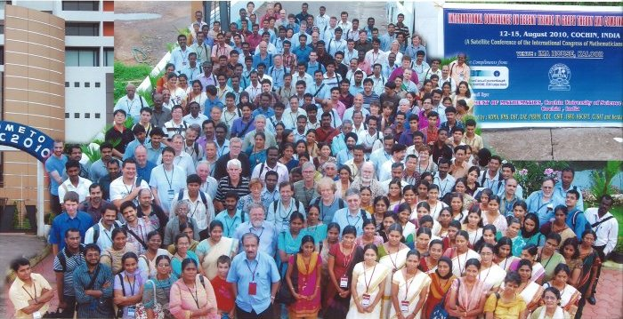
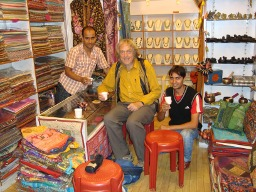

Cochin and Kerala, August 2010
The International Congress of Mathematicians took place in Hyderabad, India, in
August 2010. I was not going to the Congress, but had been invited to be
one of the plenary speakers at a satellite conference, the
International
Conference on Recent Trends in Graph Theory and Combinatorics (ICRTGC2010),
organised by Ambat Vijayakumar, in Cochin, a historic old town in Kerala.
On my one previous trip to India in 1988, a group of students in Bombay had
told me that the two parts of India that I really must see are in the far
north and far south: Kashmir and Kerala. I don't know if I will ever get to
unhappy Kashmir, but at least I had the chance of seeing Kerala.
I had agreed to go to the conference when I was rather less busy than I was
that summer. So making the arrangements for the trip was a bit of a
last-minute rush. I booked a flight for Rosemary to come out after the
conference for a week's holiday, the details of which had not been arranged.
I was not expecting the trip to be at all relaxing.
On with the story ...
10 August: the journey out
Yesterday was a packed day. I had to see my Masters' students (and finish
reading their work), collect and mark the Number Theory resit scripts (the
exam finished at 4:30 for most of them, 5pm for the specials; fortunately,
out of six registered, only two turned up, not including the special, so I
had no trouble finishing this and passing it on before I went home), and, of
course, pack.
This morning was a very early start. I set my alarm for 5, slept badly, finally
dropped off, and woke five minutes before the alarm went off. So I got up and
dressed, and set off in good time to walk to Whitechapel.
As I walked to Whitechapel, a drizzle started; but by the time I got to the
airport it was bucketing down outside.
It is remarkable that now it is possible to catch a 10:00 flight from Gatwick
without taking a taxi. I got the first train on the East London line at 5:48.
I had to change at Norwood Junction for one stop to East Croydon. There was
a ten-minute wait and, since I am the sort of person who reads everything,
I read a poster, which told me that my Freedom Pass wouldn't be valid on the
Norwood Junction to East Croydon leg. (It works on London Transport 24 hours
a day, but on ordinary trains only after 9:30 on weekdays.)
So I dashed out there, bought a single to Gatwick Airport, and was in
time to catch the train. Then I made a tight connection at East Croydon. I was
inside the north terminal an hour after leaving Whitechapel.
At the bag drop, they didn't like the photo in my passport. So I had to wait
while a supervisor took it, and gave it to someone else who vanished into the
bowels of the airport. I half believed that the trip was going to end right
there; but after ten minutes or so she came back and said it was OK. None of
their explanations made any kind of sense. At one point the girl behind the
desk told me to relax; I said I can't relax at an airport.
No problem going through security, and then finally I got my first coffee at
Wetherspoons. I also got some more reading matter: a book about the Knights
Templars.
Boarding was punctual, and the flight uneventful. I was sitting right at the
back, in the middle, with no window anywhere near, so no chance to see where
I was except with the in-flight cameras (very unsatisfactory). Fortunately
they had a good selection of music on the entertainment system (Jimi Hendrix,
Cream, Steely Dan, Joni Mitchell), and I started reading about the Templars.
The food was not very good – I asked for lamb, it turned out to be
sausages with the texture of sponge – but a warm scone with cream and
jam came at teatime.
We landed right on time. The camera gave me a bit of a shock: already by
half past seven it was pitch dark. They told us that the temperature was
40 degrees, but of course I didn't get to test that. Rain in London, fine
here, and presumably rain again in Cochin.
Round the houses, a fair old hike brought me to the gate for the Cochin
flight just before it opened. It seems that I am probably almost the
only non-Indian on the flight. It also seems to be obligatory for the Indians
to have huge quantities of bags from the duty-free shops. In the gate lounge,
we were regaled with Muslim prayers.
At boarding, I possibly got a taste of what is to come. Emirates board by
"zones", but as soon as they started boarding, everyone got up and milled
around, so that it was very difficult for those entitled to board to get
through the scrum.
Again the flight was punctual. I was in a window seat this time, but right
over the wing of the Airbus, and it was pitch dark all the way, so nothing
to see. The video system was on the blink as well. Flight information never
got further than telling us, over and over in Arabic and English, that
Emirates doesn't wait for connecting passengers. (At one point they announced
that they were going to reset the system, and this would take a couple of
minutes. Needless to say, nothing happened.) The person sitting next to me
was unable to believe that the games were not working, and kept jabbing at
buttons, without removing the handset; tough on the person in front of him.
The meal was two kinds of chicken (Western or Indian) or vegetarian (okra
stew with cabbage sambal). I went for the vegetarian; it was quite nice.
There was a yoghurt drink as well as water, and carrot and rice pudding to
follow.
We landed right on time, a couple of minutes after 3am. A stewardess welcomed
us to Cochin, "where the local time is 3:30, no, sorry, 2:30". A couple of
minutes later, she made a special announcement apologising for her mistake
and saying that it was actually 3:20... Is adding an hour and a half so
difficult?
Off the plane, and on to immigration. The officer didn't like my passport,
and left me standing there for about five minutes while he went away to talk
to someone, much to the disappointment of the people behind me in the queue.
At this point I decided that I had had enough, and began to wish I hadn't come.
Finally he led me to some seats and told me to wait. I discovered then that
getting out my book and starting to read is a sure-fire way of getting
something to happen. Almost immediately, someone came out with my passport
and led me back to the desk I'd been at (where my form had been left), and
told the officer to stamp it and let me through.
I thought all this messing around would have meant that my bag would be on
the carousel when I got there; but no such luck, I still had a good
three-quarters of an hour to wait. When finally it came, I made my way through
customs (the same system, everbody pushing and holding out their forms),
and was outside the airport building.
Vijay had said there would be someone to meet me, so I looked for either a
familiar face or someone holding up my name. No such luck. There was a big
crowd waiting for arriving passengers, but after a while I found myself on
the other side of it, wondering what to do next. (Fortunately, it wasn't
raining; humid but not excessively so, and not too hot.)
I tried putting my card in a machine to get out a few rupees. Of course it
didn't work!
I went back and looked at the crowd from behind. I noticed that someone was
holding up a piece of paper with ICRTGC2010 on it (dimly visible from behind,
through the paper with the airport lights behind it), so I fought my way
through the crowd and tapped him on the shoulder. He was waiting for three
people (including Sandi Klavzar), none of them me. I told him I was here for
the conference and gave him my name. He told me to wait. Eventually someone else
came and told me to wait somewhere else; but he turned out to be a taxi driver
and was there to take me to IMA house.
Even at the airport it was less frenetic than North India; once outside the
airport, there was a four lane road into town (not always in good
condition) with very little traffic on it. The night-time impression was not
green banana trees and golden sand, but dingy industrial buildings and
apartments, with a surprising number of people out walking or jogging. We
crossed a couple of rivers. Eventually it seemed more like a town; we turned
off the road and there was the Jawaharlal Nehru stadium, with a small bumpy
road leading round it. After that, and a considerable drive, we came to
half-open gates and a reception hall. The driver asked me to sign a form,
shook hands, and left.
Inside there was a man at a desk and a porter. The man at the desk couldn't
find my name on the list, and neither could I at first (I was quite
tired by this point); but eventually I spotted it, next to last. He took my
passport and made me fill my details into a big book. Eventually he
gave the porter a key and we were away.
We went out the door and into a different building, up in the lift to the
fifth floor. The porter opened the door to an apartment, and we went in. He
opened every door inside, showing me bedroom, bathroom, lounge with air
conditioning as well as ceiling fan, separate toilet (though there is one
in the bathroom), small cooking facilities; then he was gone.
With the time nearly 6am, I threw myself down on the bed and went to sleep.
11 August: Cochin
I went straight to sleep, and didn't wake till 9.
I got up and unpacked, and took a shower and dressed. I figured out what to
do about the air conditioning (switch it off at the wall). I wondered about
venturing out in search of breakfast; but the call of bed was too strong, so
I went back and slept till 1. Even then I found it almost impossible to
get up; so I went and made myself some Nescafé (boiling the water
twice) to try to tell myself it's daytime.
|
Then I read the relevant section of the guidebook, covered my exposed parts
with sun cream and insect repellant, and ventured out. (The sun cream was
necessary, but I didn't see a single mosquito, despite all the standing
water.)
On my way out of the building, I came to a window with an outside view. (Mine
only looks onto an alley.) I was amazed to see a sea of palm trees, with the
occasional high-rise building poking up through the trees. Indeed, the road
up to the stadium is a curious mixture of shacks on the edge of sewage ditches
with the washing hanging out, and gated compounds and new luxury high-rise
developments.
|
|
|
The stadium was huge, and all the space under the stands was taken up with
shops and businesses of various kinds. Some of these were tour operators.
I will have to ask Vijay's advice, or go to the conference travel agent.
There were a lot of big brightly-coloured temporary structures, apparently
connected with the Onam festival, which the guidebook describes as a kind of
harvest festival and also greeting a king who was banished by the gods and
allowed to visit his subjects one day a year. It seems that there is some
entertainment in these places, and maybe ladies are segregated. Just behind
the stadium, yet another was being erected.
|

|
Then I came to the main road, more like India as I remember it. The drains
were being cleaned (a terrible job that involves someone standing in the
putrid water digging out gunk, which is just left in heaps on the road),
so what footpaths existed were virtually impassable, and it was necessary to
walk in the road. The sound of horns was continuous; it must take a lot of
practice to identify when a horn is directed at you.
I was looking out for a bureau de change, and finally spotted one on
the other side of the road. So I walked down to a traffic lights, which
enabled me to cross in relative safety, and went in. I got quite a good rate,
higher than they were advertising, and tax is a fixed 25 rupees no matter what
the sum. It was all a bit bureaucratic, involving scanning three pages of my
passport, but finally I got the money and the passport was returned. Then I
asked for a receipt. (You need this if you are to change rupees back at the
end of the stay.) This took even longer, but finally I got a certificate with
three official-looking stamps and two signatures.
|
I decided to head back at this point, and spent some of my new rupees on a
big bottle of cold water.
Back along the main road, I got the feeling I was nearing a temple; among
other signs, a shop was selling marigold garlands (rather withered). It
turned out to be St Anthony's church (slogan: "St Anthony pray for us"),
replete with the weirdest mixture of Catholic and Hindu devotional art.
On the way back, between the stadium and IMA House, a fishmonger had opened
his stall. I asked if I could take his picture; he was pleased, and grinned
broadly.
|
|
Back in my room, I drank some water, and put the large rupee notes in my
wallet, the small ones and coins in a leather purse. I found that, with the
ceiling fan on, there is no need for air conditioning; the breeze cools my
sweat. There is a comfortable chair right under the fan; what could be
better?
I went out to explore a little. There were more birds in evidence, including
green parrots (just like London!) and crows (which I haven't seen close up
yet); I caught a glimpse of a large bird of prey.
I found my way to the dining room. I was too early for dinner, which is
7:30 to 10:30; but they did me a freshly made pakora and a litre of bottled
water for 50 rupees, which hit the spot nicely. (There are no notices up
anywhere; to find the restaurant I had to ask at the front desk, and to wait
a while as both people there were on the phone. The restaurant has no sign
up and no hours posted; you have to ask.) There are, however, signs for the
conference beginning to go up, listing all the sponsors.
Back in my room I decided that a day of down time is probably what I needed
anyway; and I am not good at coping with real down time (with people running
round seeing to my whims), so this kind of thing is fine.
I'd been warned in something I read about the intermittent power in Kerala;
indeed, the lights went out and the fan stopped while I was sitting in my
comfortable chair, but they came on again before I had time to do anything.
I sat dozing in the chair for a while, and then went out for dinner. In the
restaurant I found Jarik Nešetřil and Helena, Patrice
Ossona de Mendez and his
wife, and Dalibor Froncek, so I joined them. Later Tom Zaslavsky came in and,
much to everyone's surprise, they let us put two tables together so he could
join us too.
You have to stay vigilant. I let quite a lot of time slip before demanding
a menu, and more before demanding to order, so that by the time my food came
all but Tom had left. I had a very tasty Keralan fish masala with naan.
Dalibor and Jarik were having beer, so I joined them in that.
By the time we'd finished eating, there was no further chance to register, so
I just went back to my room, sat for a while, and went to bed, fully
expecting to be unable to sleep after such a dozy day.
12 August: Conference, day 1
I went straight off to sleep. I was awoken just after 4 by a mosquito buzzing
in my ear; I was awake just long enough to zap it, and then fell asleep again
until 7:30, when I had to drag myself awake, as the opening ceremony (which
lasts for an hour and a quarter) is at 9:30.
I showered and dressed, and went out. The restaurant was closed, so I went to
look for registration. On the first floor of the main building, I found
breakfast set out: chapatties, some runny curry, something looking rather like
couscous, and a sweet marrow. There was fruit juice, but the only coffee was
instant (and not even out of a jar; a minute amount had been put into a dish,
and the server had to scrape it out, since the humidity had made it congeal).
Various old and new acquaintances including Shamik Ghosh were there.
So I breakfasted, and then went to register. This was done very quickly;
the conference bag is a rather nice briefcase faced with jute, but smelling
strongly of new plastic. I looked for wi-fi but there was no signal at all.
One commissioned item in the programme is an account by Mohan Shrikhande of
the work of the "Euler spoilers" Bose, Shrikhande and Parker. The Shrikhande
graph is the rotating figure on the Conference logo (see the start of this
account), and later I wrote an account of how this graph is connected with
the Euler conjecture on orthogonal Latin squares, and put it
on my blog.
|
I went and found a suitably inconspicuous seat in the hall for the opening,
but Vijay came and fetched me to sit in the front row. When my eyes weren't
blinded by the spots for the television cameras, I was disturbed to notice
my name (along with those of Jarik and Laci Lovász) on the table on
the stage. Sure enough, Vijay asked Jarik and me to sit up there. (Laci had
not yet arrived, still in transit from Budapest).
The ceremony was as you might expect. First we had a short chant sung by a
group of girls, in which the words "Om" and "Shantih" were evident.
|
|
|
Then
the speeches; mostly just perfunctory (the head of department told us that
there are 8000 books in the library – he was obviously very nervous).
The main address was by K. N. Panikkar, who is vice-chairman of the
state Higher Education Committee. He started off with some good stuff about
how there is no longer Kerala science or Indian science but world science, but
then got off onto how there is a "revolution" in Indian higher education, which
must become "interdisciplinary". (Jarik fingered him as a communist –
indeed the communists have traditionally been powerful in Kerala, I believe.)
I wanted to debate this with him – I think you can't be
interdisciplinary until you know your own discipline really well –
but of course there was no chance. Then we all
had to help light a ceremonial lamp, a girl sang a traditional song (very
beautifully), and there were some "felicitations". Then came the presentation
of mementoes (the important people, including yours truly, each got a "trophy"
with our name on it), the national anthem was sung, and the event was over.
|
|
In the middle of the ceremony, Laci arrived; he had just come from the airport,
and took only long enough to change into a suit before showing up. He arrived
while the girl was singing, and so waited until she had finished before
coming up onto the platform. My hat's off to him!
After the ceremony we had "high tea", which consisted of a very inefficient
serving line and one plate of sandwiches for the 300 or so delegates.
Fortunately I was near the front and got mine quite quickly.
Then the conference proper began with a lovely talk by Jarik, one of the best
I have heard him give, full of musings about what we are doing and why, and
why homomorphism duality is a natural thing and what it connects with, and
so on. Following that, we had to make hard choices among invited speakers in
parallel sessions; I passed up one by Geoff Whittle on binary matroid minors,
and one by S. Arumagam on fractional metric dimension (I had better tell
Robert that the cottage industry has spread to India...) to hear Tom Zaslavsky
talk about switching classes of signings of the Petersen graph. He got tangled
up a bit sometimes, and Brendan McKay was sitting beside me making comments,
including one at a crucial moment when Tom deflected a question to me and I
hadn't heard what the question was.
After lunch (where we were segregated by floors, depending on which talk we
had just been to), I got a password for the wi-fi network (having discovered
this morning that it is an encrypted network). I started up the white toy to
try it out, only to find that suddenly the networks were unencrypted. I
started to read my email, but the connection dropped out. Trying to
reconnect caused problems because the computer thought it was already
connected! So eventually I just had to admit failure.
While all this was going on, a bevy of young ladies in beautiful saris came
up to ask for my autograph. Not something I have much experience with!
When I got round to trying for a final time, the battery was very low, but
the computer crashed when I switched it off. Knowing that the screen display
would use power and drain the battery, I decided that as soon as the talk
ended I would have to find a pin and reset it. So I went back to my room,
where I found no pin, but eventually remembered that some of the conference
papers were stapled. The staple did the trick! Then I had another panic because
the charging light wouldn't come on, until I recalled that I'd forgotten to
put my keyholder in the slot to turn on the power. After that was done,
everything was fine. But I skipped the talk to let the batteries charge a bit.
There is no wi-fi in my room, and if I leave the room the power goes off, so I
can't leave the machine charging.
|
So I skipped one session and tea, and went back to listen to Gyula Katona
talking about some generalisations of Sperner's lemma.
After this talk was the conference photograph. They had us all milling round
in front of the house, and took the picture from the first-floor balcony.
After this morning, I was happy to lurk inconspicuously at the back. Then
we were told there was an exhibition we could see before dinner. A lot of
people set off walking down the road towards the stadium, so I went too.
The final photograph has had some extra features added to it, as you can see
below.
|
|

After a while, I found myself in company with a couple of young locals, who
insisted in taking me there and showing me around. It was in the large
colourful shed I had seen yesterday. I had taken it then for some festival
celebrating Onam, which it might indeed have been, but it was not what I
expected.
After paying 30 rupees for a ticket (the segregation I thought I
saw was simply in the ticket queues; I didn't notice whether ladies paid a
different price) and putting your name and address into a prize draw (which
seemed to be compulsory), we went in to a kind of cross between a market and
a huge department store. Everything was on sale, from popcorn to heavy-duty
diesel generators, taking in consumer electronics, dodgy Indian health
remedies, Kashmiri silks and Keralan woodwork, and many kinds of snacks.
Anything I might have been tempted to buy was much too heavy to carry round.
(This included some really beautiful large earthenware pots.) My one purchase,
which they absolutely refused to let me pay for, was 250 grams of a mango
sweet which was described as halva, but not as I know it.
At the end of this I decided I'd had enough, and said goodbye and went back
to the hotel.
Seen on the road: on one side, a very luxurious gated apartment called
"Elysian Gardens"; on the other side, a car stopped with a woman in it looking
resolutely straight ahead from behind the wheel, while on a patch of open grass
not five metres from the road a man was relieving himself in full public view.
I forgot to mention another odd thing about that road. It is four-lane with
a wide green divide down the middle, except for a stretch of about twenty
metres where one side is completely covered with vegetation and the traffic
has to switch to the other side.
Back at the house, I finally managed to get the white toy to talk to the wi-fi,
and logged on and read my email. Nothing urgent except for an email sent on
Monday by Julius Aron, who wanted to talk to me about the Rubik cube. It seems
it has just been established that the diameter is 20 (i.e. the best algorithm
can guarantee to solve the cube in 20 moves); he is writing an article for
New Scientist about this and wanted to talk about it. There was also an
email from Alex Bellos who is going to the ICM and was disappointed not to
see my name on the list; he wanted advice about what talks to go to.
Then it was dinnertime. I talked to lots of people, and dispensed advice
about what to read, how to attack a problem, whether to try to come to
London as a postdoc, etc. I ended up having a long conversation with Tom
(and Jarik, before he had to go) about philosophy, science fiction, etc.
Jarik claims to have answered a question of Kant by proving that any graph
with contains all C4-free graphs must contain a 4-cycle.
Someone told him that; he has never checked the reference. I don't think I
could be so strong-willed!
Back in my room I found that the secure wi-fi connection is actually reaching
this point now, so had a go at logging on. Unfortunately I got the "Pending"
message. I found I had quite a lot of networks, several of which were in the
"Pending" state, so I went through and deleted everything and tried again,
but that didn't help. So I transferred photos and then went to bed.
13 August: Conference, day 2
I paid for sleeping well the last two nights by being unable to get to sleep
for quite a long time.
My talk is at 9:30, so I was a bit caught out when I found that today's plenary
was at 9. Laci Lovász gave a really lovely talk on graph limits. I have
heard this stuff several times before, but never as clearly as this!
After the break, Brendan McKay talked about the latest result of his team:
asymptotic enumeration of binary orthogonal arrays (he calls them
"correlation-immune", a term from cryptography). He told a nice story.
The Russian cryptographer Denisov published this result for fixed weight
in 1992; in 2000 he retracted his result and published a different one. But
Brendan showed he was right first time, by first re-doing it himself, and
second by finding a mistake in the 2000 paper. But he has been unable to
make contact with Denisov to tell him.
Sometime during all this I managed to read my email (the white toy is working
perfectly now, perhaps because I deleted all the unused networks last night).
Linh had sent me a LaTeXed chapter, while Chalita had sent me a question as
a PDF file. I fetched her question, read it, wrote a reply, and mailed it to
her, then to discover that she had replaced it with a different question in
the meantime.
At lunch there was an unfortunate incident when Helena collapsed while eating
her lunch. I went and grabbed some of the girls from the desk; lots of people
milled around, but after a few minutes she recovered by herself and sat up.
I suppose Jarik took her to lie down.
After lunch I had a long talk with Shamik about where to go for holiday
(he strongly recommends Lake Periyar), and with Dr Sivaramakrishnan about
an old paper of Neil Sloane: he claims a certain formula for the number of
even formally self-dual codes over GF(4), whereas it is actually the formula
for the number of self-dual codes. But up to length 6, every even formally
self-dual code is actually self-dual. I thought this was not true in general
but I can't think of an example.
In the afternoon there were special sessions: I went to the design theory and
coding theory session, mainly to hear Sharad Sane. We had K. T. Arasu
in his forthright style. Then K. Gopalakrishnan, an engineer, talked about
codes for redundant disc arrays (the codes are the same as error-correcting
codes but the desirable properties are different, e.g. redundancy corresponds
to extra drives which is expensive, so keep the number of check digits low).
After him, R. Pawale talked about the current status of quasi-symmetric
designs: this is heroic stuff, but they can still only do very special cases
(but I am the godfather of the field, it seems).
Sharad gave a low-key talk and didn't stress the highlights, but there were
some fascinating problems there. A k-clique in this context means an
intersecting family of k-sets which is maximal (i.e. has no blocking
set of cardinality at most k). Apart from the famous
Erdős–Lovász conjecture, that the number of sets in the
smallest k-clique is bounded by a quadratic in k (true for
many special values, e.g. prime power plus one, when projective planes give
examples), he asked:
- Is the number of different k-cliques finite, for fixed k?
And if so, find good upper bounds for the numbers of points and k-sets.
- Is it true that a k-clique in which any two sets intersect in
exactly one point is a projective plane?
A special case of the second question, which he and I looked at over twenty
years ago, is whether the points of a 2-(v,k,1) design can be
covered by r blocks, not all those through a fixed point.
|
Then we had the cultural event, a programme of Keralan dance, Mohinivattam
and Kathakali. I found an inconspicuous seat halfway back, but I was given
the job of presenting one of the mementoes after the event and made to sit
at the front (which was actually an excellent move). I was pleased to see
that Helena was back on her feet; she and Jarik joked that it had just been
an attention-seeking move.
The Mohinivattam dancer is also the sister of one of Vijay's PhD students.
This kind of dance is expressive rather than graceful, and involves a lot
of "dancing" with the eyes and the facial expression. She did two pieces,
the first an incantation, the second on the ten incarnations of Vishnu as
various animals, half-humans and humans (though I failed to discern which
was which). The impression was of a porcelain doll. This was done to
recorded music.
|
|
|
So I was relieved when the Kathakali troupe set up several drums. One of
the drummers was a boy, probably not even in his teens, who was astonishingly
good. One of the other drummers also sang. The dance tells stories from the
Hindu sacred works (the Mahabharata in this case), and apparently nowadays
many other sources including Shakespeare (according to Vijay, who says that
it is frequented by all sections of the community, not just Hindus). It
involves characters in very heavy and elaborate make-up and costumes,
who still dance stunningly well. Indeed, they conduct the drummers with their
hand gestures as well. The level of coordination was very impressive.
|
|
|
I started off watching, and even taking a few photographs, but in the end I
was drawn in to the drama and was on the edge of my seat. The story is
basically this: two men fight over a woman; one kills the other and eats his
entrails (with quite realistic blood), and gets the woman; then Lord Krishna
comes and blesses him, so that's all right. The fighting was very stylised,
but still managed to create in me the tension of not knowing who would win
(though I expect Indian audiences will be well aware of the story); but
the eating of entrails was quite extraordinary.
I took pictures without flash, as only seemed right (though others didn't
think so). This means that several of them were blurred and only fit to be
thrown away. But in any case, the pictures no way capture the event.
After about a dozen mementoes had been presented by various members of the
conference and partners, it was time for the banquet, which actually was not
too different from lunch and dinner every day. I talked to Brendan, who was
in "rant about fundamentalism" mode following the performance (which he had
actually enjoyed), but made my excuses fairly early to go back and go over
my talk.
|
|
When I came out of the building, the paving stones were wet: the first
evidence of rain I've seen since arriving here (despite the dire forecast).
14 August: Conference, day 3
I spent an even more sleepless night. I don't know whether they put some
stimulant in the ice cream. Lying awake so long, I couldn't help worrying
a bit.
The paving slabs were even wetter this morning; it must have rained even more
in the night. I heard nothing, but maybe it was the humidity that kept me
awake. I had some things I haven't tried before for breakfast: a boiled egg,
fruit (a bit disappointing for this part of the world), and ready-made coffee
(virtually indistinguishable from ready-made tea).
Upstairs, nothing was ready for my talk; there were people messing round with
the sound system from last night, doing soundchecks (why?). I tried to read
my email, but the networks which actually work were off and I was unable to
connect. By 9, they were on, and I could take a look; no message about the
television interview.
By this time the room was almost full; people assumed the same start time as
yesterday. We all sat patiently until time for my talk at 9:30. I did discover
that when I gave the girls my USB stick yesterday they had copied the wrong
file; that was soon fixed.
Doug West, introducing me, remarked on the number of problem sessions I had
edited for the BCC proceedings as one of my main contributions to combinatorics.
Fortunately I had noticed that there was a request from him for the input file
for the 2009 problems.
There were some problems with the microphone at the start; and the clicker was
very temperamental, sometimes not working and sometimes skipping over several
slides. Apart from that, the talk went well (though I did notice places where
I had been a bit lazy preparing the slides). I gave them a bit of a pep talk
(since it seemed to be expected) about how we are mathematicians, not graph
theorists or specialists on graph colouring, and they should keep open for
connections.
Quite a lot of comments afterwards. Renu Laskar wanted me to say something
about analogues of partial geometries in higher-dimensional spaces; Gyula
Katona was pleased that I had said that Baranyai's Theorem is one of my
favourite theorems. But the best questions were from Brendan later on. Here
are two that he asked:
-
Is there a bound for the number of generators of a transformation monoid,
analogous to the n/2 result for permutation groups? And is there an
analogue of Jerrum's filter?
-
What is the probability that a random automaton with n states and
k transitions synchronizes? And if it does, what is the expected length
of a reset word?
I was able to come up with a simple argument for the case k=1, using
Joyal's lovely proof of Cayley's Theorem. Joyal gives a correspondence between
doubly-rooted trees and transitions; the periodic part of the transition
corresponds to the vertices on the path between the two roots. So the
automaton is synchronizing if and only if the corresponding tree has the two
roots equal, which has probability 1/n. Presumably an answer to the
second part of the question can be dug out of results on random trees. I
liked this so much I posted it
on my blog.
It may be that Colva and her team in St Andrews have thought about the first
problem; she has a student working on monoids from a computational point of
view.
|
I opened my "token of gratitude" for the lecture; it is a Keralan wood-carving
which has some connection with the Kathakali. I saw one similar in the Onam
place the other day. They are handing out so many of these (to all invited
speakers and some chairs) that the conference must have been good for business
among Keralan wood-carvers!
Some nice talks before lunch. Especially Jeannette Janssen, who was
unfortunately only giving a 15-minute contributed talk, about an analogue
of the random graph for subgraphs of the distance-≤1 graph in certain
metric space. They get a unique random graph for the reals, or for
n-space with either the product metric or the l∞
metric, but it fails in the Euclidean plane. She didn't have any time to talk
about what properties these "random geometric graphs" have.
|
|
Vijay tells me that the television interview has been rescheduled for 8am in
the morning. So I'd better sleep well!
After lunch, Jack Koolen told us the latest about attempts to prove the
Bannai–Ito conjecture for distance-regular graphs (only finitely many
with given valency) and related things, such as his conjectured generalisation
of the Bose–Neumaier stuff on strongly regular graphs with given least
eigenvalue. (The heart of this conjecture is saying what the analogue of
Steiner system and Latin square graphs are.) Also, S. Pati talked about
algebraic connectivity, which is defined as the second eigenvalue of the
Laplacian; I learned that its eigenectors are called "Fiedler vectors" and
have various nice properties. S. Siaranakrishnan talked about the Ehrhart
polynomial of zonotopes, and ended up with a q-analogue of the
Laplacian of a graph. So connections buzzing there!
It wasn't always easy to pay attention; lots of people asked me questions,
some of which I could answer (e.g. "Where can I find a proof that, in a finite
ring, the ideal generated by zero-divisors is the whole ring?")
After tea we had the poster session. I am not much good at this since so many
people print their posters in small type so that I have to get close and peer
at it. But I went round a lot of posters and talked to some of the people
presenting.
Then there was a showing of the film about Endre Szemerédi's honorary
doctorate in Prague ("the only sort of degree you don't have to study for").
Then dinner, over which I had a conversation with Sharad about elephants and
one with Brendan about graph isomorphism. I left fairly early, as I have to
be up early in the morning. I read Linh's chapter on commuting graphs (I think
she's got it a bit backwards, with the hard stuff before the easy stuff), and
went to bed.
15 August: Conference, day 4
I slept much better. (I don't think it was worry about my talk that had kept
me awake, though.) I had showered, dressed and breakfasted in good time for
the arrival of the TV crew.
They showed up at about 8:15, and decided that the best place for the interview
would be the terrace. But no sooner had they set up their cameras and started
to check levels when the fireworks started going off (today is Indian
Independence Day). After the fireworks came the amplified music from a group
of wooden sheds just under the tower blocks, where clearly there is going to
be a party. So we had to change the plan, and use a spare bedroom at the back
of the building on the fourth floor.
The interviewer Manoj Das talked to me all the time while the setting-up was
going on, so he was aware of what I had
to say and knew what questions to ask. He had done his research well. Once we
finally got going, time seemed to fly, and I couldn't believe we had finished
when he called a stop. He seemed pleased with the result, which he said
will be shown
in about a week's time. My brief was to say things that ordinary people could
understand, not talk about real technical mathematics.
(The interview was in fact broadcast on Asianet on 1 October.)
By the end of this, I had completely missed the problem session, so I had a
cup of coffee and went to Vladimir Trofimov's talk. When the talk was over,
as the questions were starting, Vijay fetched me out: the person who was to
give the Independence Day address at the closing ceremony,
C. P. Narayanan, had arrived, and Vijay wanted me to talk to him.
He is a politician on the Kerala State Planning Board, but was a mathematics
teacher in a former life. We got on well for the short time until we were
called to the closing ceremony.
This was not so elaborate as the opening: an invocation to God at the start
sung by two female students, then a number of speeches, and some singing
(accompanied by tabla, keyboard and drum machine) by the Mathematics students,
and then the national anthem to conclude.
I learned one thing in the closing ceremony. R. B. Bapat of the
Indian Statistical Institute, Delhi, told us
a story. The four-armed god Vishnu has many names, but there are twenty-four
which are universal and are known all over India (though, inevitably, with
some slight variation). He recently discovered the reason why this is. Vishnu
has four weapons, one in each hand; one name is associated with each
correspondence of hands to weapons, and in temples you can see the different
permutations labelled with the names. I suppose the really surprising thing
is that this is not generally known, so that even a numerate academic only
recently found it out. A bit like the Kerala mathematics school in a way;
the mathematicians here made extraordinary discoveries, including infinite
series for trigonometric functions long before this was done in the West,
but kept them secret, and then they were forgotten.
|
C. P. Narayanan told us that the great achievements in Kerala have been in
education and land reform (he belongs to the Communist Party and is justifiably
proud of their land reform). Vijay told us that Paul Erdős
had said that there are three important things about Kerala: Catholicism,
Communism, and 100% literacy.
Then we were invited to a traditional Keralan lunch, though they didn't serve
it on banana leaves and make us sit on the floor. Very tasty, though I didn't
have very much since I was much in demand for photos, autographs, mathematical
conversations, etc.
|
|
Right at the end, I had the chance of a word with Vijay, and told him that I
hadn't arranged anything. He immediately called the travel agent from
Idols Hay, whose office is not far from
IMA House. The agent, Mr Anoop Thomas, came over, sat me down, found out what I
wanted, booked a hotel for two nights on the spot, and went away to arrange
a trip for the remaining days. Unbelievable, and a great load off my mind.
He will come back tomorrow to confirm everything, and will also arrange a
taxi to pick Ro up at the airport when she arrives.
He will want her flight details. I tried to log in to double-check that I had
it right, but the wi-fi chose this moment to play up, and I was unable to do
so. A bit of a worry. I had also planned to reassure her that everything was
under control. I guess it won't get done now. There is no signal at all in
my room.
During all this time there were lots of goodbyes. The organisers and helpers
gave me a picture with their signatures on the back; a girl interviewed me
for her college magazine; and many people wished me well.
Finally I gave up on the wi-fi and went to my room, somewhat exhausted.
I should have been pleased to have at least a hotel for the next two nights
sorted and proceedings in hand for the entire trip; but I felt nothing but
stress. What if I had got the days wrong? What if some other disaster happens?
To try to relieve the stress, I worked on adapting my slides from this meeting
to re-use in Belfast, and transferred the last few photos from the camera,
but nothing really helped. I suppose I am on holiday now; I don't do
holidays well!
Dinner cheered me up considerably. I found most tables occupied, but a man
sitting by himself invited me to join him. He was a doctor, and an extreme
extrovert, and could converse with only slight inaccuracy about British
politics (this topic arising from my name when I introduced myself) and a
wide range of other topics as well. He was curious about where I was from,
and when I told him that I lived in the Bangladeshi quarter of London he
told me a story about why the food in Bengal is so good. It seems that a king
of ancient times was so concerned about his food that when he marched his army
to Bengal he sent 15000 cooks on ahead to make sure good food was ready. Then
the king died and there was nobody to pay the cooks' way home, so they stayed,
and plied their trade locally.
After dinner, I worked for a while, then packed, and went to bed.
16 August: Cochin
I was still too worked up to sleep for a long time, but by morning it was
quite a bit cooler and I woke feeling fairly rested.
Jack Koolen and the Koreans were at breakfast, and a table of strangers, so I
sat by myself. After breakfast I spent about an hour reading MSc projects
before getting ready to check out.
The man from the travel agency had said that he would be there at 11am (at
least, that's what I thought he said). So after I checked out, read some more
of Sigita's project, read the newspaper, and did the sudoku and most of the
crossword, and it was nearly 12, I asked the desk to phone him. It turned out
that he expected me to come to his office, which according to his card was
at the JNI stadium. So I walked down the road to the stadium in light rain,
and walked right round it without finding either Idols Hay or the ITES Habitat
Centre. I had to ask quite a number of people before I finally found it. One
person pointed me down a corridor that said "No admittance", past people
repairing motorbikes, to a little office; they scratched their heads and
eventually one of them took me back to the street and pointed me further down.
After a couple more attempts I was there, and it is no wonder I couldn't find
it; no signs at all, a small office right in the centre of the building.
The next bit was almost too good to be true. He suggested an itinerary which
would involve two days at Munnar hill station, two at Thekkady near Periyar
wildlife sanctuary, one at a resort in the backwaters, one on a houseboat,
and then back to Cochin for the last day. Unfortunately, the day for the
houseboat is Onam, and no boats will be operating. So we brought the houseboat
forward a day, followed by a day at another backwaters resort, Kondai Lip. He
made a few phone calls to confirm, printed out hotel vouchers and itinerary,
and that was that.
He also arranged a car to take me to the airport in the small hours of
tomorrow morning to meet Ro and to bring us back to the hotel.
Small problem: he had no facilities for credit card payment, so he wants
nearly 800 US dollars in cash. Oh dear. He will come tomorrow at 10, and I
have to find it by then.
The other bit of business was a message from Vijay. He invited me to his
university tomorrow where there is some kind of Onam celebration. A few other
people still here are also invited, and he relied on the travel agent to
book a car to take us there and back.
We went outside where there was a car waiting to take me to the Gokulam Park
Hotel. It was down the street I walked along on the first day; now the traffic
was if anything even worse. Just a little further than I had reached, on the
other side, was the big hotel. I checked in and was shown to my room.
I went out to start my quest for money. On the way I met one of the hotel staff
bringing my passport. I asked him, and he helpfully pointed me to an ATM almost
next door. I went down the road, the rain even heavier now. This ATM was
prepared to give me 10000 rupees on each of my cards, which with the money I
changed on the first day which hasn't been spent yet, is probably just over
half of the total required. I will just have to go along tomorrow to get
some more, and possibly drag Ro along as well.
So I went back to my room. The white toy detects a wi-fi network but cannot
connect to it; probably it is private. So I wrote up my diary and read the
rest of Sigita's work. Then I had a bath, and phoned the travel agent to get
the price in rupees; less than I had feared, so in fact we are nearly there.
Then I went down to the lobby to ask about internet access. They took me to
the "business centre" where there was one computer running Windows. I opened
up the dreaded Zimbra Webmail, and scanned my email in case of disasters,
fortunately finding none; of course there was nothing I could do about
sending Sigita and Linh my comments. It looks as if that will have to wait
until I am back in London.
And then there was nothing to do but wait ...
As the afternoon drew on, the incessant sound of traffic noise and horns
mingled from time to time with chanting from the mosque. I went to dinner as
soon as the dining room opened. I had just finished my soup when Geoff Whittle
and his daughter Bella came in, so we sat together and talked, which whiled
away some time rather nicely. She has been in this part of the world for a
while, working for some pesticide commission; they are about to set off on a
tour similar to mine but going in the other direction.
They had a buffet; I ate fairly modestly but still probably far too much. The
food was excellent. I have been here long enough that five pounds for an
all-you-can-eat buffet seems absurdly expensive!
I went back to my room and lay down on the bed. The traffic noise was still
incredibly loud: the window doesn't shut completely. So I started pondering
whether the commuting graph on the non-central elements of a finite group
determines the group order; and, so wondering, fell asleep.
17 August: Cochin
I woke before the alarm, had a glass of water, and went downstairs to wait
for the car. The only thing I could find to read was the financial pages of
the paper, but that saw me through until the driver arrived a few minutes
early. He was surprised I had no luggage, being apparently unaware that it
was a pick-up not a drop. What else didn't he know?
He drove carefully and sensibly, but we made good time, and I thought we were
going to be early. But then he stopped for fuel. He pulled up at a pump that
was not working, and then went and joined in a large and noisy altercation
around the working pump. This seemed to be just the queueing system. After
a while we had done the business (I noticed he didn't turn off the engine
while the fuel was pumped), and we set off.
He parked the car right outside the terminal while we went to look at the
screens. There was a long sequence, and we had come in just after the first
screen. Seeing an Emirates flight at 8am, he assumed we had hours to wait.
He turned around and saw the police getting ready to get rid of his car.
So he dragged me back and we got in and drove off.
I was a little perturbed when he started off down a dark side road and asked
me whether I wanted tea or coffee. I explained somewhat abruptly that I wanted
to get back to the arrivals; while he was fussing with the car I had noticed
that EK532 had already landed. So he drove back. Rather than leaving the car
in the car park, as I expected, he dropped me off and said he would be back,
pointing to a spot. So I stood by the exit, and he went off, presumably to
circle around a few times.
After an interval I saw Ro's unmistakable hair in the crowd round the luggage
carousel. At a certain point she turned round and looked; I waved but she
didn't see me. But the second time, she did. After a rather longer interval,
her bag came and she was out. We went and waited at the appointed place.
By this time, a sudden downpour had started; we had to stand back from the
edge. But after a few minutes the driver did turn up, and we piled in and
were off.
At the hotel, she simply left her passport with reception, went to the room,
and went straight to bed and slept. I was still rather tense, but after a
while relaxed enough to sleep.
I got up at about 8:30 and went out to get some more money. Remarkably, my
bank card was still working, so I took out another 10000 rupees: enough to
pay the travel agent, have a bit left over, and still have some pounds to
change in an emergency.
We went to breakfast and had lovely bowls of fruit (the first really nice and
plentiful fruit I have had here) and a more traditional Indian breakfast with
a freshly made dosa – and decent coffee!
When the travel agent came at 10, I was down there ready for him; we concluded
the transaction and he gave me the name, mobile number, and registration
number of our driver, Mr Ratheesh. Perhaps it is all going to work ...
|
We finished the crossword and went downstairs to wait for the car to CUSAT.
As I closed the door I thought I heard the phone ringing, and indeed when
we got down the driver was there. He had to go to IMA House to pick up
Andreas Hinz and his wife, and then drove us out to the University. We had
a bit of trouble finding the mathematics department, but eventually spotted
a sign on the side of a blue and lilac building. We went in, past
a floral carpet on the pavement, and were guided
upstairs, to where all the students were seated in a classroom with something
in Malayalam (probably "Happy Onam") written the board festooned with
streamers and balloons. Most of the girls were wearing the traditional Kerala
saris, white with gold trimmings, and very happy they all looked.
|
|
|
An opening ceremony of the now-familiar type (but much less formal) was
in progress. We were seated in the front row and almost immediately were
called upon to go up to the microphone and say a few words. (A very few, in
all cases; but this seemed the right thing to do, and all were wildly
applauded.) There was some competitive singing, the students having been
divided into teams, and some very nice dancing.
At some point the other invited guest, Sandi Klavzar, arrived, and also got
to say a few words. He asked me what to say; I said "Wish them happy Onam",
so he did.
|
|
In the middle of proceedings, Vijay called us away to spend ten minutes with
the Vice-Chancellor. He had actually been at the closing ceremony of the
conference, so I had met him before. We drove over, and were allowed through
a gate where other cars were being turned away. We went in to where a more
elaborate ceremony (lighting the lamp, giving presents) was just concluding,
and then taken upstairs to the VC's very grand office. We sat in comfortable
chairs and had a conversation about this and that, and then time was up, so
we reversed our steps back to the Mathematics department.
|
When we got there, it was lunchtime, a proper traditional Kerala feast on
banana-leaf plates. It was a superb nosh-up. At the end we were given two cups
of what looked like cold coffee, one milky, one black. They were both delicious
sweet puddings, drinkable rice pudding and one with no milk but some spice
I couldn't identify.
In the afternoon, we chatted with Vijay for a while, and were shown the
library (where Ro and I each found one of our books). Then back to the main
room where the students were having some more competitions, with great
hilarity: the announcement of winners of the singing, then a treasure-hunt,
then a version of "pin the tail on the donkey".
|
|
In the middle of this Vijay called me out again. He had another friend of his,
a journalist, on the phone; since we are leaving tomorrow, we arranged to meet
at the hotel (her office is very near) at 5. So after watching the student
fun a little longer, we made our excuses and left; the students gave us a
round of applause. The car took us, without too much delay, back, first to
IMA House, then to the Gokulam Park Hotel.
I left Ro reading my diary and looking at my pictures, and went downstairs to
meet the journalist. It was a very good talk: rather than an interview, more
like a conversation between two people each with knowledge and opinions. She
had done her homework very well, having read my blog and even some of my
travel diaries. I even told her some anecdotes against myself, and we had a
good laugh. At the end, she promised to send me (via Vijay) a copy of the
article, and said that she never expected to "enjoy talking to a
mathematician!"
(Unfortunately, pressure of schedules meant that the result of this enjoyable
interview was never published.)
After this, Ro and I ventured out to the ATM; Ro tried her card in the machine,
but it was not playing. So either I will have to make a trip tomorrow, or we
could change some pounds in the hotel. I don't think 3000 rupees is enough to
be setting off with!
After the feast we felt in no need of dinner, so packed and had an early
night.
18 August: To Munnar
Today the first leg of the trip begins, with the drive to Munnar.
We were up early and to breakfast when it opened. Very nice spread as usual.
We went back to the ATM; Ro tried her other card which worked (and indeed
offered her up to 20000 rupees).
We expected the driver at 9, but the front desk called up just after 8:30.
We went down, checked out, paid cash for my dinner and phone call, and then
we packed our stuff into the car and were off.
Along the airport road for a while, then we turned off up a surprisingly small
road which went through a green country of almost continuous settlement. Many
houses newly painted in bright colours: the range pink-lilac-blue-turquoise
the most popular, but other colours too. Churches (of which there were very
many) were part of the riot of colour.
At a roundabout in one town we passed through, a group of schoolgirls in
uniform were crossing the road. They saw us and all pointed, and then, as
if suddenly remembering that it was rude to point, they stopped, and burst
into giggles. We waved to them, and they happily waved back.
|
We saw lots of bananas, pawpaws, coconuts, and pineapples, and our driver
pointed out many others: rubber trees being tapped, jackfruit, paan palms,
tapioca, cardamom, and teak. We stopped at a viewpoint from which you could
see a tribal village down in the valley; in the foreground a pepper plant
was climbing up a palm tree, and there was a cocoa tree with two big pods.
A small butterfly fluttered around, and a much larger one flew far below us.
After we crossed the Periyar River on a big new bridge, the country changed
completely. It got steadily hillier, very heavily forested, and with almost
no settlements. We stopped to see several huge waterfalls, including
Cheyappara (where there were many stalls selling fruit and drinks) and
Velara. There were some flowers including coral tree and morning glory.
|

|
At one point, we passed a troop of monkeys, importuning visitors who stopped
at the roadside stall.
Roadside advertisements were curious: the most popular, by some margin, were
silk dresses, followed by MBAs and, oddly, animation (though whether this is
drawing frames for cartoon films or making web pages with moving graphics was
not entirely clear to me).
The country got ever more precipitous, with occasional glimpses of tall
oddly-shaped peaks towering above the river valleys and huge rock faces with
water running down them. Here there were more houses, again beautifully
painted. We stopped at another viewpoint with stunning far views, and our
first glimpse of a tea plantation. Soon we were among the tea plants, shrubs
kept low by pruning every few years, and with paths running among them so that
every point can be reached by the tea pickers. There were also some areas
which had been pruned and sprayed with some white substance. There were also
groves of tall straight eucalyptus, which is used as fuel both by the tea
factories and by the workers on the estates.
|
Finally we were in Munnar. The old part of the town had some interesting
buildings and was not overcrowded, but the New Bazaar was very crowded. Our
hotel, the C7, was a bit out of town along the road to the Tea Museum.
The driver left us for an hour and a half to have lunch. We decided to forgo
a meal, so we sat on the of our balcony for a while, with fine
views over a tea plantation, watching and listening to many types of birds
including swallows, crows, tickeaters, and pigeons, some with white tummies,
and a large black bird with reddish wings, in the trees near the river,
and enjoying the coral trees,
datura and morning glory. Then we went for a walk into town.
|
|
|
As we left our room we noticed it was raining, and went back for waterproofs.
We walked into town, crossing one of the battered pedestrian bridges over
the river, and saw the variety of shops in the bazaar. A modern mosque sat
on one hill, a temple on another. We came to a place with a nice view down
the valley with a flowering tree in the foreground.
The bazaar was fairly crowded, but not as chaotic as the busy streets in
Cochin. By this point we were beginning to get used to the unwritten rules
of traffic. Despite first impressions, it is actually based on courtesy and
consideration. The horn is used far more to convey information ("I am passing,
or would like to pass you; or I am coming, don't step out into the road") than
to vent anger and frustration as in Europe. In the other direction, if the
driver can see that it is impossible for you to take evasive action, he does
so himself. In these less crowded towns, it is not hard to figure out when a
horn is directed at you.
|
|
This is necessary because, unlike a place like Iran, where the traffic consists
of almost identical vehicles moving at almost identical speeds, the Indian
traffic is a complicated mixture of pedestrians, animals, cars, big trucks,
buses, bikes, motorbikes, and of course the ubiquitous autorickshaws or
"tuk-tuks", so-called for the sound of their two-stroke engines. Most of
these were taxis, often grossly overloaded with passengers hanging out of the
sides, but some had been converted for other uses, mainly as light trucks.
At this point it started to rain seriously. We took shelter for a while
under an awning but eventually decided to brave it. (I think we should have
taken a tuk-tuk back to the hotel.) The rain tipped down, and we were
pretty wet when we got back. We hurriedly changed in time for our next
expedition, by car to the tea museum.
This was only a kilometre or so past our hotel, part of a huge complex which
included a tea research station and a school (we saw the school bus as we
were leaving). The museum was well worth the 75 rupees per head entry fee.
As well as old photographs, furniture from planters' houses, and machinery
of various sorts, we were shown a film about the tea plantations. It made out
the planters as some kind of secular saints, deeply concerned with both the
ecology of the region (it is said they only cleared one-third of the forest)
and their workers' welfare. I wonder what the real story is!
The company is now a workers' cooperative, as one would expect in
a left-leaning state: the original
planters' company was gradually bought out by Tata, who permitted a workers'
buy-out when they decided to get out. Then we saw some antiquated machinery
for turning the leaves into tea, lots of belt drives, pistons, rollers, etc.,
very Heath Robinson. The end product is a fine powder, in keeping with the
Indian style of tea (I believe most of the tea from this region is consumed
in India). After the demonstration, we pottered around by ourselves, looking
at rooms we had been rushed through.
The driver took us back to the hotel and left us; we will meet at 9 or 9:30
tomorrow. We decided to sit on sofas in the lobby, by a fine picture window,
while the rain bucketed down outside; we did the crossword, and I transferred
my photos and wrote my diary.
On learning that the hotel is called C7, I had envisaged a grid of 64 hotels,
but fortunately it doesn't work like that; it is a one-off. The room service
menu includes, under soups,
- Cream of Tomato
- Cream of Tomato (Vegetable)
- Cream of Tomato (Carrot)
- Cream of Tomato (Chicken)
(the last costing an extra 15 rupees) immediately followed by
We went down to dinner. The dining room was empty apart from us; we were
outnumbered by waiters, to say nothing of chefs. Feeling hungry after lunch,
we ordered far too much food and couldn't finish it all. But it was good,
especially the starter (Mongolian dry vegetables).
Back in the room, we went out on the balcony again. The rain had stopped, and
a cool breeze sent the light clouds scudding across a moon just past half full,
riding high in the sky. The song of crickets was incessant. Lights shone from
the road and houses on the other side.
19 August: Munnar
I awoke to some of the most beautiful birdsong I have heard, a lovely fluting
melody which came nearer and then receded again. Other sounds, including
parrots squawking, roosters crowing, and the ubiquitous crickets, formed a
background, but the soloist had gone.
So I got up and sat on the balcony for a while watching the light grow stronger
and light clouds drift across the sky. I had the great pleasure of seeing
a kingfisher fly along the river and up the hill on the other side, a flash
of brilliant pale blue. Later, a cormorant flew over high above.
After breakfast, the tea pickers were out in the fields across the river.
Contrary to what we were told in the film yesterday, they do not just pick two
leaves off each stem with their fingers; they use a gadget which
seems to be clippers attached to a box to cut the tea, and when the box is
full they tip it into the bags on their backs. This explains why the tea
plantations all look like carefully trimmed hedges.
We went down to meet the driver, and set out on the road to the national park
at Eravikulam, leading out of town between the temple and the mosque. The
road wound ever higher, through dense woods of eucalyptus, with lantana by
the roadside; it could almost have been somewhere in south-east Queensland
except that the mountains were a bit too high and there was far too much
beautiful morning glory in flower. Then we came to a stream and the road ran
along its banks for some way. Cows grazed the green grass. We came to a tea
factory, and then another, and crossed the river on an old bridge, heading up
under tea plantations to the entrance to the park, hindered briefly by a herd
of cows coming the other way and spread across the whole road.
|
Here we had to buy tickets, for ourselves, the bus, and our cameras. We were
the first visitors to arrive, and the ticket seller was still at breakfast;
but he came soon, we got our tickets, and sat on the bus. Just as well, as
soon a large party of schoolgirls started cramming on.
When the bus was full we set off up a steeply climbing road with precipitous
hairpin bends, with fields of tea on either side. Soon, ahead of us, we saw a
sheet of rock at nearly 45 degrees, with quite a big cascade of water coming
down the middle of it. We approached it in a zigzag fashion, and eventually
crossed the stream on a bridge. The driver stopped for us to look at the
water sheeting down just outside the windows. Then we continued the rest of
the way to the park entrance proper.
|
|
|
There was a little visitor centre and some refreshments, but mainly this was
the place where you get to walk in the park. "Trekking" is strictly illegal,
and you have to walk up the narrow winding road. So we did, not very fast:
Ro seemed to be suffering from the effects of altitude (we were probably at
about 2000 metres).
The park is famous for two things: the Nilgiri tahr, a kind of wild goat which
is so tame that it was almost wiped out by hunters, and a flower which only
blooms every 12 years, and last bloomed in 2006 (so we weren't going to see
that). Right on schedule, three tahr appeared round a corner. I took a distant
shot of them, but they were completely unafraid and let us come right up to
them. They walked down the road, and we continued up, where we soon met the
park rangers whose job it is to chase this little group of animals onto the
road when parties of tourists come.
|
|
We climbed further, with superb mountain views and a wide variety of
wildflowers, as well as another waterfall of the sheet-on-sloping-rock type,
when we rounded a bend to see a sign saying
Here is the limit,
and two guards to enforce it. A pity, since the road continued and there was no
obvious reason to turn back, but there you go.
|
We sat down on a rock for a breather before starting back down, when up came
the schoolgirls who had been on the bus, with their teacher, and decided that
this was the ideal place for a photo session. After a while, a few of them
introduced themselves to us and decided that they wanted their pictures taken
with us. The teacher, whose name was Philip, obliged, and took one with my
camera as well. They are from a Christian girls' school in Tamil Nadu.
After many photos and lots of hilarity, they started back down, and we followed
slowly at a distance, examining all the flowers, and taking more photos.
|
|
At the bottom, we went round the visitor centre, a mere 5 rupees per head.
There were lovely photos of wildlife, though not a huge amount of information.
But some of the bird photos were labelled, and we were able to identify some
of the birds we saw from the hotel balcony: grey-headed canary flycatcher (the
one with the white tummy), whitebellied shortwing, and the black bird with a
shading of red might have been a red-vented bulbul. Also the bird who sang
might have been a Malabar whistling thrush.
|
We bought a local speciality, chocolate with roasted cashew nuts, at the shop.
Then we went to wait for the bus back down. The queue was quite long, and when
after a considerable time a bus came, we didn't manage to get on it. But the
next bus followed not too long after. Another thrilling ride brought us back
to the bottom terminus, where our driver was waiting.
Back in the car, we set off on the next leg, back to Munnar (on the way we
noticed that the cows were on the football pitch, perhaps practising for
the Milk Cup), and then off to see a couple of
dams, Mattupetty and Kundala. On the way, we had a couple of stops. The first
was at an extraordinary floriculture centre run by the forestry department,
with everything from fuschias to cacti, most in a riot of colorful flowers. The
paths were being reconstructed, so some things were shut off, and others
required some care.
|
|
Then we went to lunch at the T&U, a posh-looking restaurant in a hotel.
Though it seemed up-market, and the dining room had a wonderful view over
Silent Valley, we had a very satisfying lunch for half what we paid for dinner
last night: just a fish masala, a prawn biryani, a Kerala paratha, and the
trimmings that come anyway (poppadums, pickle, raita).
We had a bottle of cold mineral water with our lunch. A slogan on the bottle
caught my eye: we were promised "Wellness of organic minerals".
While we ate, several sparrows came into the dining room and hopped around
on the floor, and a black bird with shades of dark blue flew past outside,
identified from this morning's pictures as a Malabar whistling thrush. So it
is plausible that we heard one.
The way out was through another large area of tea plantation. There were
trees planted in rigid straight lines among the tea plants. We had seen a few
of these before, but nowhere near as many; I reckoned they looked very much
like silky oaks. The driver said they are called "silver trees". Later we
found in a guide book that they are "silver oaks" – this could easily
be the same name, just twisted a little. He also showed us a tree with many
huge bees' nests in it.
|
The dams were less spectacular than the morning's entertainment. The first
has no river flowing in, and because of low rainfall the level was quite a
way down. We were let off; the driver took the car across, while we walked.
On the other side of the dam, there was a long row of stalls; in one of them,
our driver was having a cup of tea (without milk!). We told him not to hurry,
and walked up to the end of the stalls and back. I tried to photograph the
morning glory, but didn't get the blue to come out very well. So the driver
took my camera, scrambled round the back of a stall, and came back with a
perfect close-up of a flower. He had got his sandals a bit muddy and had to
wash them with water.
|

|
On the way to the second dam, we passed an area where wild elephants are
sometimes seen, but our luck wasn't in; all we saw was a tame elephant that
was tethered by the roadside looking very unhappy. We will apparently see
much better elephants at Thekkady, so we passed up the chance to ride it.
At Echo Point, the main excitement was speedboat rides, which we forewent.
I tried out the echo but it seemed to be asleep and my "Coo-ee" wouldn't
wake it up.
At the second dam, there were some very nice pink-flowering trees, some small
houseboats on the water, and a cow wandering by the roadside (by no means
the first of these that we have seen!). This dam has an arch shape to
increase its strength. The level was also low. As we walked across, we
admired the old machinery for opening the sluices and the steep steps down
to the bottom of the spillway.
That done, we drove back to Munnar. The driver offered to drop us in town for
some shopping, but we opted to go back to the hotel and maybe walk to town
later.
With no sign of rain, we felt confident enough to set out, but took waterproofs
just in case. On leaving the hotel, we noticed the drivers' room, full of
bunk beds. Since only the bravest foreigners use public transport, the tourist
industry is dependent on the army of drivers; it seems they realise this and
provide facilities for them. We noticed later that, when the car drives past
the gate of some tourist attraction, the driver doesn't have to pay (and
indeed sometimes gets out and gets tickets for his passengers).
We went through the crowded New Bazaar, and found the tourist
agency that is probably the one run by the legendary Joseph Iype. We bought
one of his booklets about Munnar and surroundings, containing much more
accurate maps than the Rough Guide provides.
We proceeded along a fairly nasty piece of highway to the old town.
A church on a hill above the road, looking remarkably like an English parish
church, turned out, not surprisingly, to be the Church of South India. (The
huge church in the New Bazaar, with grotesque flower-decked statues outside,
is Catholic.) We found the official tourist information but didn't go in. We
also photographed a remarkable pair of guesthouses side by side down a side
street, one bright green, the other shocking pink.
|
The map showed a return route crossing the river on a footbridge and then
taking a small road along the other side, so we decided to find this. It
worked extremely well. Just before the footbridge, a sign listed about twenty
people dead on a date in 1984: I suppose the footbridge washed away. Judging
by the state of some nearly-new river walls, I am sure the next tragedy can't
be far away.
It was a lovely walk, with almost no traffic, seeing the whole town from the
other side. Several times we met people who almost always wanted to stop for
a chat, exchange names, or whatever. There were some plants with odd white
leaves looking as if they had been blown upside down; in fact they were all
white and had some connection with the flowers.
|
|
Our road back to the hotel did lead through the bazaar, but soon enough we
were back at the hotel. After I had transferred my photos, we decided to go
down to dinner.
This time, we were much more modest: we had soup and dessert only. The
Cream of Tomato (carrot) was off, as was the chef's recommendation Lamb Broth,
so we both had tomato soup. The only dessert apart from ice cream that they
had was Gulab Jamun, so we both had that as well.
Then the crossword and bed, ready for tomorrow's journey.
20 August: to Periyar
After breakfast and checkout, we started on the road to Periyar, along the
ridge of the Western Ghats. At first it
was almost nothing but tea. We left the KPH estates and entered those of
another company, Harrison Malayalam, who obviously have different attitudes:
"Photography Prohibited" signs were there in abundance.
|
Then we passed through a narrow cleft at the top of the ridge (the Lockart Gap)
and what a sudden transformation. The valley ahead was full of cloud, and we
were looking down on it as if from a plane, with only the tips of the mountains
on the other side standing above it; a magical view. In the foreground, trees
loomed through the mist. We descended into the cloud, making for difficult
driving, especially as the road was very narrow, carved out of the steep rock
face.
Fortunately we soon came out under the cloud into a different, and wetter,
country. There was some tea plantations at first, among which was Chinnakanal,
a nice waterfall (better
from afar than close up). But soon we came to rain forest. Huge
plantations of cardamom were sheltered by the forest trees, and we saw some
coffee, with both flowers and berries on the bushes. The roadside had various
bright flowers including hibiscus and a salmon-coloured datura.
|
|
At one of the stops, we saw the black bird with red wings, which we thought
might have been a red-vented bulbul. The driver didn't know what it was
called but phoned his wife to ask.
An image that struck me from somewhere along the road: a palm leaf umbrella
with a shocking pink wall immediately behind it.
We followed the winding mountain roads through the forest for a long time.
Eventually the land grew flatter and we saw rice growing in paddies. The
driver asked us if we wanted to go to Elephant Junction. We agreed. There
we were offered three levels; we opted for the full hour and a half.
Our guide Dilip introduced himself. We were taken to the mounting platform;
an elephant was brought, a 35-year-old female whose name was Doora.
We scrambled up on her back. I found that the difficult part was having to
spread my legs so wide: for the same reason that I can't sit cross-legged,
I found it a bit of a strain. We set off along a trail, the mahout and an
assistant with us.
|
They kept pointing out plants to us – tea, coffee, cardamom, jackfruit,
pawpaw, mango, cinnamon. The tea, coffee and cardamom all had flowers as well
as berries on the last two. Some huge jackfruit hung from the trees.
We also saw a couple of birds, one of which we were told was a plover,
and some large and strange insects.
At several points we stopped for photographs; once a blue umbrella was
provided as a prop.
|
|
I had managed better on the way down than on the way up; for Ro it had been
the other way round. But about halfway down I started feeling quite sick, as
if about to faint or throw up. I loosened my belt and hung on (not literally;
by this time I was confident enough to keep at least one hand free). Finally
we were back and dismounted, and the sickness passed as quickly as it had
come.
There were several further parts to the entertainment, all of which were
duly photographed. First we fed pumpkin to our elephant, which it seemed to
swallow whole; I am not sure whether it chews it later or what. Then, as an
interlude, we got to watch a larger Kerala elephant lifting logs. It uses
trunk, tusks and feet in a very impressive way; the mahout controls it with
pressure of his feet on the animal's ears.
|
Finally it was the elephant's bathtime. It got into its tub, and we were
invited to take our shoes off and get in to scrub it with coconut shells.
We got to sit on its neck to scrub its ear, which apparently it enjoys.
Then came the shower. Ro went first ("ladies first!"). She sat on the
elephant's back and held on to a rope, and the elephant let fly with a
trunkful of water. This was done three times, and then she had to sit on
its front leg for a photo. Then it was my turn; I had to strip down to
underpants and wrap a towel round me. (Ladies don't get the option of keeping
their clothes dry.) Despite having seen it, I was a bit taken by surprise;
it's like having a bucket of tepid water thrown at you quite hard. But quite
an exhilarating experience.
|
|
I was given a changing room to put my clothes back on. When I came out, Ro
was suffering a bit: the force of water had given her a pain in the back of
her head.
Back at the car, the driver had an answer on the bird: a coucal.
We drove to the Periyar Meadows hotel, which was down a side road just
through the town of Kumily, declining a martial arts show and postponing the
spice garden visit until tomorrow. As we approached the check-in desk, a
waiter brought a tray with two very welcome glasses of mango juice.
We checked in and went to our room, where Ro took
two paracetamol and lay down, while I transferred my photos.
After a rest, we went downstairs and had a cup of tea in the restaurant.
Suitably fortified, we wandered out to find an ATM, having got directions
from the man at the desk. Walking out, we were surprised to see two monkeys
climbing along a wall. After I took a couple of pictures, we noticed that
a roof across the road was covered with monkeys!
We passed a dress shop; Ro thought we might stop there on the way back. When
we found the ATM, it was already occupied by someone taking a long time. By
contrast, I was quite quick; I should now be OK for cash for a little while.
We decided to walk just a little way down the main road before returning.
About three doors down was another dress shop, so we went in. We spent quite
a bit of time and money there!
The shop was run by a Kashmiri Moslem with the help of his brother. He showed
us a selection of dresses; Ro tried some on but they were too small, so he
got out some larger ones. At this point it was clear that we were serious
customers, so he sent his brother to get tea for us.
I chatted about cricket and various other things (it seems that Pakistan are
faring a bit better in the current Test Match against England than in the
first two) while Ro made her selection. When she had found three
suitable items of clothing (for her mother, sister and herself), I had
admitted to the man that my daughter is getting married next month, and
started looking rather helplessly at cushion covers. Instead, he produced a
five-piece set comprising a bedspread, two pillowcases, and two cushion
covers. Actually he produced two, but one was so just right that there didn't
seem any point going any further. The price was reasonable, too, so we
didn't bother to bargain; they rounded the price down and threw in a painted
wooden box.
|
The shop could accept credit cards, so no problem there (except that, on the
first attempt, the connection was lost; second time everything was fine). They
wrapped it up in a surprisingly compact parcel, and invited us back for tea
tomorrow at 7.
We went a bit further up the street and saw some more Indian-looking cows,
wandering through the traffic or standing next to a restaurant sign, but the
traffic was so bad that we decided to turn around and head for home.
We came to a bookshop we had seen on the way out, and went in. The first thing
I set eyes on was "War and Peace". The stock was an extraordinary mixture;
even the way it was shelved added to the sense of confusion. We couldn't find
any light or cheap books on birds or any such thing. But we found a
book of stories by R. K. Narayan for only 100 rupees, so got that.
Then we headed back to the hotel.
|

|
We sat on the balcony doing the crossword before dinner. Almost immediately
the crickets started up, with loudest and most intricate song I have ever
heard these creatures make. We had to pause in reading out clues when the
one in the tree near the balcony started up, since it was quite impossible
to hear a thing.
After dinner, we went up to prepare for an early start in the morning for our
cruise on Lake Periyar.
21 August: Periyar
I'd set my alarm for 5:30, but was woken by the call to prayer from the
mosque round the corner at 5.
We were too early, and had to wait first for the hotel gate to open, and then
for the Nature Reserve gate to open. We were third car through the gate; our
driver overtook one of the others (strictly against the rules), but when we
set out to walk to the boat station, the passengers from the car we overtook
walked faster than we did, so again we were third in the queue.
|
We got our tickets and waited again for the gate to the path to the boats to
open, and again for the boat to be ready for us to board. We got two seats
upstairs on the starboard side (but in the general moving round when we set
off, the seats in front came free, so we each had a seat by the edge. I found,
sad to say, that my camera battery was nearly flat; the camera took so long
to fire at each exposure that taking pictures from a moving boat was quite
impossible, and I abandoned the attempt.
There was a lifejacket on each seat, which we were expected to don; no
instructions, but it was fairly self-evident. We discovered why there is a
bar down the middle and passengers are assigned to one side or the other. At
the first sighting of anything interesting, everyone on the other side got up
and moved to the bar; were it not for that, they would presumably capsize the
boat.
|
|
Finally we were off. The lake was down a bit from its maximum level, and grass
had grown on the clear part below high-water mark; this is where most of the
animal sightings were made. Some of the hills surrouding the water were
forested, while others were clear grassland. In the water, many trees were
sticking up. Presumably they have been there for a hundred years, which
testifies to the endurance of the timber.
Needless to say, we didn't see a tiger, or even a leopard. We saw bison, first
a large herd (with a calf capering round its mother), and later three animals
grazing high on a grassy hillside; deer, first a male with large antlers
sitting by the shore (he was still there when we came back), and then a small
herd; a couple of wild pigs; two wild dogs, just at the point where we turned
around; and some shapes on a hillside which might have been goat-like (or
maybe just small bison). Some of the other passengers were quicker at spotting
animals than we were, and appeared to have done this before.
There were many birds, including huge numbers of cormorants; several herons;
three kingfishers, one flying and two perched; small birds looking like
swallows; a poultry-like bird on the shore; and many others unidentified.
Loud birdsong came from the forest. One of the cormorants started following
the boat on the way back, flying past us and then diving in our wake. Perhaps
the boat stirs up the fishes and makes its job easier.
Trip over, we walked back to the car park, looking at the fine trees by the
side of the road. The only one we identified positively was a strangler fig,
though there were trees that looked like kauri.
The driver took us back to the hotel for breakfast. As we drove out of the
nature reserve, we saw a giant black squirrel climbing a tree.
|
After breakfast (and changing my camera batteries), we were off again, to the
"interpretation centre" in the Nature Reserve. By this time, the rain had
started (how fortunately it held off for the boat trip), and the roads were
turning to rivers as we drove up to the museum.
Actually, "interpretation centre" is exactly what it isn't; it was a very
traditional old museum, with skins, bones, etc. on shelves, and all kinds of
horrors in glass jars, including complete animals (some of them embryos) and
various body parts including heart, liver, lungs and spleen. There were no
descriptions; many of the exhibits were not even labelled, or the labels had
faded into illegibility. We wandered round fascinated.
|
|
At the end, we went out and found a floral carpet in the museum courtyard
slowly disintegrating in the rain. Ro started to photograph it, and the two
women who had made it appeared, and were very pleased to be photographed too.
Ro had decided she wanted an ayurvedic massage, so we stopped at the place
the driver recommended (there are many in the town) to book a 5pm session.
Then he took us to a shop run by his "best friend" and invited us to have a
look. The shop had some very interesting stuff, including some characteristic
models made of wound brass wire by the tribal people (though not entirely
clear from the patter whether it was the local tribals or those in Kashmir).
The shopkeeper had the wrong technique for us. He assumed that we wanted to
buy a wall hanging, and pulled out piece after piece, spread them out, and
then covered them with the next one. He expected us to make an instant
decision on seeing the right piece and buy it on the spot. So, with some
difficulty, we extracted ourselves and got back in the car.
|
Next was the Green Park spice farm, one of the highlights. It had a huge range
of plants, from the common (cardamom, cinnamon, two kinds of ginger) through
the ayurvedic (we were given detailed explanations about how this plant cures
kidney stones, that one all kinds of skin disease) to the frankly incredible
("Australian passionfruit", or fasion fruit as the leaflet had it, something
I had certainly never seen, with a fruit the size of a melon). There were
also two kinds of yam (elephant's foot and elephant's ear), sweet potato,
tapioca (leaves and roots can be eaten), and "Jain potato" which fruits
above ground so that you don't have to kill any worms harvesting it).
There were several cocoa trees, one of which conveniently had a vanilla
vine growing up it.
|
|
There were also some interesting low-tech innovations. These included
intercropping pepper (growing it on a shade tree instead of the traditional
beanpole-like tree, this tree can itself be useful like coconut or jackfruit)
with cardamom (which needs shade and grows happily under a canopy). There
was also a mini-paddy made of concrete, from which you can get three rather
than two crops a year, and, if you build it on your roof, it keeps the house
cool without need of air-conditioning. They had a biogas plant to supply them
with fuel.
That, along with a number of hives (we were shown the honey-extraction machine,
familiar from my childhood) and several sorts of banana trees, some with
exquisite flowers, completed the tour.
Then back to the hotel. We were not very hungry, and in any case the staff
festive Onam lunch was only just finishing, so we went to our room, and
ventured down later for a cup of tea and a dessert. Then we had showers and
dressed for the next stage of the day.
While we were resting, the phone rang; it was Mr Thomas, warning us that
because of a threatened strike by houseboat workers at Aleppey, our plans
for the next part of the trip might have to be changed; he would inform
the driver.
We walked down to the ayurvedic massage centre; Ro went in and I strolled off.
I went to look at the gallery across the road, and was inveigled in. I left
without buying anything, but then noticed he had postcards displayed outside,
which of course he was keen to sell me. So I bought ten, for the princely
sum of two hundred rupees.
Then I walked on and took a couple of photographs, but noticed that the camera
was saying "No memory card"; I had forgotten to replace it after transferring
pictures. So back to the hotel, where I put in the card, and then found that
the two pictures I had taken had become inaccessible. I strolled out again,
and took a new version of one of the pictures (the other hadn't been a great
success) and a few others, and then sat on the step reading a
R. K. Narayan story until the massage session was finished.
Ro came out feeling tall and loose. We went back to the hotel to wait until
time to go out to meet the Ahmad brothers in their shop for saffron tea. As
we strolled out of the hotel, a huge flock of giant bats (probably flying
foxes) came over. We watched for some time, but there was no end to them, so
we walked on.
|
The brothers were not in, but we had just heard the muezzin just before leaving
the hotel, so assumed they were at the mosque praying, as indeed turned out to
be the case. The saffron tea (which also had cardamom and cinnamon, and can be
sweetened with a drop of honey) was absolutely delicious. We drank it and
talked. Ro took a picture of the other three of us drinking tea, surrounded by
the richly-coloured fabrics, which we promised to send to them (their email
address is on their card). One of the brothers (not quite sure which is which)
slipped out and came back with a packet of chocolate chip cookies, which went
surprisingly well with the tea. Towards the end, they pressed on us a
not-so-small packet of saffron. What a delightful experience. I do hope their
business is a resounding success.
|

|
We walked back to the hotel. A frog was singing in a ditch, competing with
the crickets.
Dinner was marred by the fact that they got their timings all wrong, bringing
us the coconut-fried mutton some time before the plates came, and forgetting
the rice (with poppadums, pickle and raita) until we had virtually finished
everything else. The other odd thing was that, when I ordered aloo chat, the
waiter tried very hard to talk me out of it, for reasons never cleary
explained. It did have a lot of chili in it. In fact, though Kerala food seems
relatively mild compared to Indian restaurant food in London, it is just the
reverse for aloo chat.
22 August: to Kumarakom
There was a string of jasmine blossom in the car when we were picked up this
morning; it is the eve of Onam. Today we drive down the hills and across the
plain to the Kerala backwaters.
It is definite that we won't be going on the houseboat. So the two things that
I had tentatively marked as must-dos on the trip – walking in the jungle
at dawn at Periyar and a houseboat cruise on the backwaters – won't get
done. The other change of plan, which our driver mentioned to us for the first
time yesterday, is that we will have a new driver tomorrow. Our current
driver is going to his sister's family for Onam, and his friend is taking
over. Whether Idols Hay know about this or not, I neither know nor care.
It was a longish drive, nearly four hours, with its high and low points. The
standard of the road varied between fast highway and rutted cart track with
distressing frequency.
The first part, more than half of the trip, involved descending from the hills.
The rain forest gave way to tea plantations among less rugged hills. The first
plantations, owned by a company producing "Connemara tea", had an innovation
similar to what we saw at Green park yesterday: pepper vines grew up the
rows of silver trees among the tea bushes.
Then we came into some lovely scenery. It was heralded at first by a view
down on a cloud-filled valley, though not as spectacular as the one at
Lockhart Gap. The cloud layer was quite thin, and very soon we were through
it into a region of long views, the hilltops shrouded in cloud. We stopped
at a waterfall where several men were taking a shower in the falling water.
Further down, tea gave way to rubber plantations. One of the rubber trees was
being tapped by a man working alone.
Along the way, we saw the Queen Mary hotel, Mary Queen tailor, and the Mary
Queen mission hospital. There were many churches; one huge church was a Syrian
mission church, with tea bushes growing all round it. Indeed, Christianity
here seems to have even more sects than Hinduism, with Syrian, Orthodox,
Catholic, CSI, and almost every denomination or sect you could imagine.
Petrol stations, by contrast, are almost inevitably either Indian Oil or
Bharat Petroleum, which are presumably synonyms.
We also saw some imaginative road safety slogans on roadside signs,
such as "Say no to mobile when U R mobile", and "Impatient on road,
patient in hospital". They reminded me of one from my childhood: "See
you later, overtaker; I'm the undertaker."
When we finally left the hills, the air was warmer and moister, and there was
another change: towns and villages merged into one another with no perceptible
gap, so it was all urban driving from this point. In this part of the
country, the drivers seem less skilful and courteous than others we've seen,
and there were several worrying moments.
Several towns along the way were lavishly decorated with yellow flags. The
first such town had two bridges, each with a flag every couple of feet on each
side; flags all the way along the main street; and yellow pennants like those
in used car yards everywhere. We asked whether it was for Onam, but the driver
said that they are the emblem of a particular Hindu caste. It was not clear
what this caste was celebrating.
We came to the largish town of Kottayam, and crossed the railway line. Signage
had been very good up to this point; now signs seemed to disappear completely,
but the driver found his way unerringly.
Out of Kottayam, we were on a long straight road beside a river, virtually a
promenade. The roads and canals are more or less on a grid here. We turned
right and crossed several bridges.
Now by the roadside, we saw extensive rice paddies, often with pools of water
in the foreground. On these pools were ducks (rather like mallards but both
sexes brown and slightly larger), white egrets, a brown bird shaped like an
egret, and a kingfisher. White waterlilies and a smaller blue flower grew
in the pools. The blue flower turned out to belong to the waterweed that is
beginning to choke the backwaters.
After passing the driftwood museum, we pulled up at the bird sanctuary. (The
guidebook says these are the two attractions of Kumarakom.) We got tickets and
entered. We walked on a well-laid path made of concrete rhombs, every
now and then interspersed with a few triangles to change the orientation.
At first we saw few birds, but were very impressed with the number of
butterflies: plain brown, brown with a white pattern on the trailing edge of
its wings (this was by far the commonest), blue triangles, blue spots, and
yellow-green spots, as well as a small bright yellow butterfly. Later we saw
two butterflies mating; they were taking a long time about it, so we didn't
wait for them to finish.
But eventually we did see a good crop of birds. There was a black bird with
a blue tinge and a very long tail; a large white bird with a red-brown spot
in the centre of its back; and towards the end of the walk a red-vented
bulbul or coucal. At one point on the walk we found an observation platform.
The platform itself was locked, but we could climb to the top of the stairs,
from where we could see a dozen egrets and several dozen cormorants. There
was a roosting tree for each species, well occupied.
|
At several points along the walk, there were little huts, each holding a man
in a smart uniform, whose job was to point us down the right path (even though
it was pretty obvious). In fact, at the only point where there was a real
choice, there was no man, no sign, and we took the wrong path.
At one point the path comes to the edge of the lake. I expect this is the
prime viewing point in season (December to March) when the sanctuary is full
of migrating birds. There were small islands of waterweed drifting past, and
occasional views of moored or moving houseboats (either old rice boats, or
new boats made in the old style) or smaller craft, or islands of drifting
waterweed.
We met quite a few people in the reserve; all of them greeted us, and several
wanted to stop for a chat, or take our photograph.
|
|
Back to the Backwater Ripples hotel to check in, involving retracing our
path over four canal bridges and then turning down a narrow side road with
the hotel at the end. We sat while they processed our passports, and
then said goodbye to our driver. The hotel staff suggested that we have lunch
before going to our room since it would finish fairly soon. We had Keralan
specialities (fish and prawns, with Kerala paratha); it was exceptionally
tasty.
The hotel staff had told us that we were booked on a complimentary "sunset
cruise" at 5pm, so we sat on the verandah, looking at the garden and
children's playground, until it was time to go. There was a houseboat pulled
up in the hotel grounds, but not for us; our boat would come in at a different
jetty. We climbed the clocktower and looked at the view while we waited.
While we were on the jetty, we noticed several large brown and white birds
sitting on posts just a little way down. Once the boat came, we were seated
on the top deck in comfy chairs, and the journey began, we saw lots more of
these birds, which really were the commonest. They seem to be in the heron
family judging by their general shape and the way they fly, though they don't
sit like herons. We also saw a number of cormorants, and two treats; a falcon
was attacked in mid-air by a crow; and later, two birds that might have been
kites or even sea-eagles were circling upwards.
After the cruise and a very good buffet dinner, we went to the shop looking
for a bird book. We didn't find one, but did find a history of Kumarakom
which included some small colour pictures of birds, so bought that; then we
did the crossword before bed.
The pictures suggest that the blue-sheened black bird with the long tail is a
drongo, and that the black bird with red wings is definitely a coucal. Also,
one of the "cormorants" we saw on the cruise, with a conspicuously long and
thin neck, is a darter.
23 August: To Kondai Lip for Onam
After an early breakfast, we sat by the lake for a few minutes. We saw again
the falcon and the large circling birds of prey; also cormorants and the small
brown and white herons, one of which was sitting on a post in the water with
large fungi growing on it. These herons seem to sit on low posts watching the
water for prey, and shift from post to post fairly frequently, though we didn't
see one catch anything. The cormorants use the high posts just for roosts.
We hadn't quite finished getting ready when our new driver Sibi arrived, and
the front desk called us. Our bill was the princely sum of 40 rupees for a
bottle of water; meals were included, and they forgot to charge for the second
bottle.
Then we set off. We turned left and headed north along the road past the
driftwood museum and the bird sanctuary, a little to my surprise. At a
checkpoint, the driver stopped and got a ticket, which he paid for. A bit
later, we turned left, and after a while came to a bridge-cum-weir, separating
two parts of the lake, to keep salt out of the southerly one. The Kumarakom
book says that this permits the rice-growers to get two crops a year rather
than one, but it has destroyed the livelihoods of the fishermen in this part
of the lake. When it is time to close the gates, the fishermen attempt to
sabotage them with stones, and there is always trouble.
From the bridge, there was a view of Chinese fishing nets on the shore, with
an island behind.
A little further brought us to the main highway, a four-lane road. It seemed
to me that four lanes don't mix very well with the Indian style of driving.
People would swerve suddenly into the fast lane to avoid a motorbike, or
just a pothole, a manoeuvre that wouldn't matter on a narrow road but could
have more serious consequences here. Also, at some places, the potholes in the
fast lane were so bad that the driver had to come almost to a complete stop.
After a stretch up the main road, we came to a town and turned off to the
left. Immediately we were caught up in a scrum. People in their best clothes
were streaming back up the road from the temple, while others were going the
other way; there was traffic in both directions, including some fairly wide
trucks. A shed, not the temple, had gilded posts with black dancing goddesses
on them.
Out of the village we came to a lovely stretch, through huge bright green
paddy fields bordered by canals lined with coconut trees. We saw ducks, and
Ro spotted a kingfisher. We crossed a bridge on which many people were flying
kites. After this, we were in another village. We turned
right and caught glimpses of the sea, with boats pulled up on the beach.
|
Then we turned down one of the worst roads I have ever been on, deeply rutted
mud, and so narrow that only on bridges was passing possible. A short stretch
of this brought us to a small car parking space looking over the lake,
with the Kondai Lip gates across a stretch of water.
The driver sounded the horn, and a man came out of the gate and got into an
old wooden punt, which he punted across to pick us up. Our luggage was loaded
in and the driver came with us to see us safely to the hotel. He will now go
and spend Onam with his family, and be back at 12 tomorrow.
The punt took us round a corner and into a little boat basin where we were
helped out. We walked to reception, where we were given freshly
squeezed juice while they processed our passports. Then we were taken to
a hut, with a huge room, a bathroom, and a verandah overlooking the lake.
We sat on the verandah, watching the children boating while a man fished,
until lunchtime.
|
|
|
The special lunch for Onam was a special vegetarian meal on banana leaves,
eaten without cutlery. The staff were a bit apologetic that it might be too
spicy or too difficult for us, but we reassured them that we would be fine.
It was the most delicious meal! One of the highlights was kadu, a sweetish
dish with yellow peppers; but it is difficult to choose highlights, everything
was good. There were banana chips in jaggery, sweet small bananas, and then
three different kinds of payanam. The waiters took a few pictures of us.
As we were finishing, the large extended family staying here (an elderly
couple, their son, and their daughter, son-in-law and grandchildren (British
citizens from Newcastle) arrived for their meal. The small chidren were
delighted with the finger food; the older ones, a bit more hesitant.
|
|
After lunch we went out for a few turns round the lagoon in a pedalo. The
boatman from the front gate (who is also the general handyman) came running
to help us board.
On the second round we decided to go down a channel on the other side of a
long thin island. I saw something red on the stone wall; on closer inspection
it turned out to be the nippers of a crab. While we drifted looking at it,
the boat lost way and headed for the bank; when we pedalled to correct its
course, the crab scuttled into a hole.
Then we saw one of the large birds of prey in a palm tree right by the
channel. We had a very good view of it: red-brown body, white neck and head,
yellow beak, black eye: almost certainly a brahminy kite. At our approach
he flew away, but came back to circle; this is certainly his patch.
We'd been told there was a cruise at 3:30; in the end it was about an hour
late leaving. As it went, a waiter invited us to order tea and a snack for
our return. We chose a pakora.
The large family didn't come, so there were only four on the trip: us, and
a honeymoon couple who photographed everything we passed, and each other
(many times).
|
The boat trip was magical. We passed maybe a hundred Chinese fishing nets.
The guidebooks give you the impression that the few in Cochin harbour are
special to that location and very rare, but it is absolutely not so. Most
of the nets were out of the water, or even removed for drying or storage, but
a few were in the water. An electric light was hanging from each, just above
the centre of the net, presumably to attract fish at night. Finally we saw one
being lifted out of the water. (One man can do this, since they are
counterweighted.) As he raised it, a few greedy crows piled in for their share,
but he got what looked like several basketfuls of fish.
It was also a remarkable trip for birds, especially kingfishers. We saw quite
a lot of these, both flying and perched, and were able to get a really close
look. One of the kingfishers had a wicked-looking big dark orange beak.
Finally, we saw a kingfisher catch a fish and then sit on a post, shaking it
and finally swallowing it.
|
|
There were many other birds on show: the brown-and-white small herons, the
big birds of prey, and some others unidentified. I clearly saw a fish jump
once. There was a bird of the swamphen kind, and Ro saw another red-clawed
crab.
|
I saw a large object in the water. I joked, "There's a crocodile", but then
I noticed that it appeared to be swimming strongly, judging by the wake. But
when we came back, it was still in the same place. So I guess that in fact it
was fixed and there was a strong current. No idea what it was, though; perhaps
the remains of a fishing net platform.
We passed quite a few people, on the bunds or bridges (including the one where
we had seen the kite flyers earlier) or in small boats. All
of them waved enthusiastically as we passed. When the water was more open,
the boat driver speeded up, and at one point did a sharp circle so that we
bounced over the waves of our own wake. Presumably some people enjoy this;
for me the gentle pottering was more pleasant.
|
|
When we came home and went for our tea and pakora, they took our dinner order.
In the event it didn't quite work as planned – but imagine if you went
to a British restaurant for dinner on Christmas Day when some of the staff
had been at home with their families during the day... We ordered a fish,
of which two came wrapped in plantain leaves and were absolutely delicious.
We also ordered prawns, and on being told that both dishes were dry we ordered
some mixed vegetable curry to go with it; and some Kerala paratha. Well,
the prawns were not at all dry, the mixed vegetable was almost entirely
potato, and the Kerala paratha was
chapatties; when we tried again for Kerala paratha during the meal we got
puris instead. But no matter, it was all very tasty. The big family were
having dinner at the same time, and the kids ran around getting increasingly
worked up.
For dessert we had coconut crepes, remarkably nice.
After dinner, we walked down to the lake, and around to the point where we
had disembarked from the punt. There, in the grass, a firefly was turning its
light off and on as it climbed around on the grass stems.
I can't imagine a better place for filling up on peace and contentment in
advance of a long plane flight!
24 August: to Cochin
For the first time on the trip, a leisurely start to the day. After showering,
we got to breakfast at 8:30; it was not quite ready yet, so we sipped our
watermelon juice while we waited for the delicious puris, chick peas, and
omelette.
After that, we packed, but mainly just sat around. Since the driver was due
at 12, we ordered a light lunch for 11:45: one portion of chicken ginger
(which actually turned out to be chicken chilli) and one of coconut rice,
ample for both of us. It turned out that the driver arrived while we were
still eating, but they let us finish in peace before telling us. It had
started to rain, so after settling the bill we were given umbrellas to get
us to the car. The boatman took us and our luggage across.
In the confusion of departing in the rain, we forgot to hand back the key.
The hotel phoned the driver while he was only halfway down the rutted road,
and told him to stop at a stall just on the village street and leave the key
there.
|
Our route took the coast road through one or a succession of villages, it's
hard to say which. After a while, it did a dog-leg to go inland of a lake,
and suddenly was an almost deserted two-lane road in excellent condition.
This took us all the way into Fort Cochin, where it degenerated again to
pot-holed rubble.
The driver stopped in front of a restaurant where the guide would come at
2:30, and invited us to go in and have lunch. We hadn't had dessert, so we
went in and ordered some delicious chocolatey coconut confection with cups
of coffee. The restaurant was Koder's House, formerly the home of an
influential family of Jews. Fine old photographs hung on the walls and there
was some beautiful wood.
The guide came and the tour began. We were not told initially, but it became
clear after a while that many things we might have expected to see in Fort
Cochin were not available, either because of restoration work or because
they were closed for Onam. So no synagogue, no Santa Cruz.
|
|
We first saw St Francis', the oldest church in Cochin. Built by the Portuguese
as a Catholic church, it was converted by the Dutch to a protestant church
and by the British to an Anglican church; it is now CSI and still functioning
(we were told they had just had a christening). Parts of it really did
resemble an English parish church. One interesting feature was the punkahs,
strips of cloth hanging from a cord, which were attached to a string running
out of the church; during the service, the punkah-wallah would pull on the
string and wave the punkahs to and fro to act as fans.
Next we saw the Chinese fishing nets. They were larger and better preserved
than the ones we saw on the backwaters, and I can believe it would take four
men to operate them; but they were not working, because of Onam. Many
fishing boats and other shipping was going in and out of the harbour, and
we saw a big container terminal under construction.
We went to the Mattancherry Palace, a former royal palace with impressive
murals of Vishnu and Siva on the walls (photography strictly prohibited).
There were pictures of female royals with their breasts exposed: this had
been stopped by the colonial powers, and the guide suggested it was
unwarranted interference, while the guidebook thought that only the lower
castes were forced to do this and it was an evil of the caste system which
was rectified by the colonial powers. You pays your money and you takes your
choice.
On the road again, the guide asked us if we wanted to stop at Village Crafts.
We agreed. This is a building on three floors, with carvings and things of the
sort on the top, carpets on the middle, and miscellanea on the bottom floor.
We started at the top, but found nothing to grab our attention there, so
descended to the middle floor.
The salesman there was very persuasive. He sat us down, gave us saffron tea,
and brought out a selection of his wares, but not so large as to be
overwhelming. He brought out a loom to show us how the weaving is done.
Coloured threads are tied in knots around the warp threads, and then a weft
thread is put right through and beaten down, and the process is repeated;
the patterns are all written down and simply followed mechanically by the
weavers, whose skill is in the construction, not the design. We were told
all about figures for knots per inch, what these mean in silk, wool, pashmina,
etc. We were shown how a good carpet has quite different colour and sheen from
the two sides because of the angle of the knots. He really wanted us to buy
one, but even the cheapest was several times what we paid for Hester and Bob's
wedding present. So we said we would go down to the ground floor to think, and
return if we decided to buy.
On the ground floor there were some nice pictures; I got a pair of pictures
of Krishna and Radha for James's birthday. We had decided by this point that
we were definitely not buying a carpet, but the salesman pursued us down and
kept appealing to us to change our minds, so we got out of there.
In front of the building, there were palm trees in pots, one of which was
being demolished by a goat. People from the shop had to come out and chase it
away; the owner, with his other goats, was already further down the street.
Then we went to another café and had mango sundaes and more coffee,
before the guide said goodbye and the driver took us to the airport, on the
now familiar road (though I had not seen it by daylight before). We were at
the airport earlier than our worst fears.
So we got into a very slow line to be checked at the door by a soldier. After
a long wait we got to the front, to be told that entry to the terminal was
not permitted until three hours before departure time. There were some chairs,
so, rather disappointed, we settled down for a long wait.
At a certain point I needed the toilet, so I was allowed specially to go into
the terminal (without even a visitor's ticket, which would have cost 50
rupees) to use the toilet.
A bit later, the soldier came and told us that we should go and see the
terminal manager in an office just a bit further along, to ask for permission
to go into the terminal early. We walked down, and found the office; we were
told that the terminal manager would be back in half an hour.
When he came, he ushered me into his rather grand office and explained that,
for security reasons, it was not possible to get in more than three hours in
advance (but hinted that they would probably let us in at 12:30); but there
were rest rooms available at a reasonable price. He directed us down to the
pre-booked taxi office, where indeed they rented us a rest-room for 850
rupees (virtually the sum total of my remaining money).
The rest room was a sort of hotel room with a big bed, toilet, two old
armchairs, and a television. So we installed ourselves there and tried
to get a bit of sleep.
25 August: home
After failing to sleep in a place where the announcement of flight arrivals
and departures came through the flimsy walls on one side and the whistles of
the police moving drivers on from the loading zones on the other, we got up
after midnight, sorted out our packs, and went down to face the departures
procedures.
And what a business it was! It took at least an hour and a quarter between
arriving at the terminal door and being in a position to find the departure
gate. First, we had to queue up to be allowed in; this time, as our flight
was already saying "Check in", they let us through. Then our checked baggage
had to go through an X-ray machine and be sealed before we even got to the
check-in desk. In mine, they found some batteries (in my shaver), so I had to
unpack the whole thing and show them.
Check-in itself was not too painful, but then the fun started. First, the
immigration desk. It was quite unclear from the signs which were the queues
for foreigners; there were only two of them, and one was dealing with a
difficult case. The officer didn't like the picture in my passport, and
apparently didn't even know that he had a piece of equipment on his desk which
would read the chip and show him a large and clear copy of the same picture.
So he had to go and get somebody else, who took him to another desk and
showed him how to do it.
Then the X-ray machine for hand baggage. For some reason they picked on me
again. The person behind the desk opened my bag and took out most of the
items, putting them on a tray. They were just heaped up any old how; so when
it went through the machine, it left a trail of hotel brochures, packets of
paper tissues, etc., strewn all over the belt. I have no idea what was lost
inside that machine; for sure, something was.
I was raging against the incompetence. If I were as bad at my job as that, I
would certainly not keep it!
After that, things were fairly straightforward. The flight to Dubai left on
time; they gave us the wrong menus (those for the outward flight), and the
plane was full of howling children, but that is par for the course. We were a
bit late into Dubai but still in plenty of time to get to the gate for the
London flight, despite the tortuous route through the airport which brought
us back almost to our starting point. Then the flight to London was simply
something to be endured, with the help of a couple of crosswords.
London was rainy (like Kerala) but cold (unlike Kerala). We decided to take
the train to Farringdon and change to the Hammersmith and City Line, so were
home in an hour with only one change.
Conclusion
I fell under the spell of Kerala, "God's Own Country" (it shares this
appellation with New Zealand). The only down side of the whole trip was
the airport, where things were difficult on each of the three times I was
there (but then I am paranoid about airports anyway). The people of Kerala
were overwhelmingly friendly, and best of all, not in the least subservient
or deferential; even someone doing a job or a favour for me was prepared to
treat me as a person and expected the same in return. Scenery was terrific,
the whole trip a great experience.
I didn't expect it to be relaxing, but nothing could have been more relaxing
than the morning at Kondai Lip before the flight home.
A special word of appreciation for Mr Thomas at Idols Hay, for coming up with
such a memorable holiday at such short notice!